source(here::here("r", "my_functions.R"))Annotation and text
Under construction.
This page is a work in progress and may contain areas that need more detail or that required syntactical, grammatical, and typographical changes. If you find some part requiring some editing, please let me know so I can fix it for you.
Overview
In this module, we will work on making some plots easier to process, particularly by using text and annotation. In order to accomplish some of the ways to facilitate processing of plots, we will use {ggplot2} functions like geom_text() and annotation() as well use functions from {ggtext}, a library for manipulating text on ggplot objects and {ggrepel}, a library for repelling text . Depending on the labeling, annotation, or text you want to add to a plot, you may need to add the text to the data frame or you can use text that is not in the data frame. The approach will, however, determine the functions because of the assumptions of the objects being manipulated.
To Do
Readings
Reading should take place in two parts:
- Prior to class, the goal should be to familiarize yourself and bring questions to class. The readings from TFDV are conceptual and should facilitate readings from EGDA for code implementation.
- After class, the goal of reading should be to understand and implement code functions as well as support your understanding and help your troubleshooting of problems.
Before Class: First, read to familiarize yourself with the concepts rather than master them. Understand why one would want to visualize data in a particular way and also understand some of the functionality of {ggplot2}. I will assume that you attend class with some level of basic understanding of concepts.
Class: In class, some functions and concepts will be introduced and we will practice implementing {ggplot2} code. On occasion, there will be an assessment involving code identification, correction, explanation, etc. of concepts addressed in previous modules and perhaps some conceptual elements from this week’s readings.
After Class: After having some hands-on experience with coding in class, homework assignments will involve writing your own code to address some problem. These problems will be more complex, will involving problem solving, and may be open ended. This is where the second pass at reading with come in for you to reference when writing your code. The module content presented below is designed to offer you some assistance working through various coding problems but may not always suffice as a replacement for the readings from Wickham, Navarro, & Pedersen (under revision). ggplot2: Elegant Graphics for Data Analysis (3e).
External Functions
Provided in class:
view_html(): for viewing data frames in html format, from /r/my_functions.R
You can use this in your own work space but I am having a challenge rendering this of the website, so I’ll default to print() on occasion.
Libraries
- {dplyr} 1.1.2: for selecting, filtering, and mutating
- {forcats} 1.0.0: for creating and ordering factors
- {magrittr} 2.0.3: for code clarity and piping data frame objects
- {ggplot2} 3.4.3: for plotting
- {ggtext} 0.1.2: for annotations and text on ggplot objects
- {ggrepel} 0.9.3: for repelling text on ggplot objects
- {showtext} 0.9.6: for changing text font
Load libraries
library(dplyr)
library(magrittr)
library(forcats)
library(ggplot2)
library(ggtext)
library(ggrepel)
library(showtext)Loading Data
For this exercise, we will use some data from all time top CMS swim meets.
SWIM <- readRDS(here::here("data", "swim", "cleaned_cms_top_all_time_2023.Rds"))
SWIM <- SWIM |> select(First, Last, Year, Event, Team, Fullname, Seconds, Last_fi)Labeling bar plots
We can create a standard bar plot using geom_bar() or geom_col() depending on whether you have either x or y data or both. Let’s say the goal is to visualize Athena athletes who have participated in the 100 Freestyle. We can map the athlete names to x and Seconds to y. Because Fullname contains the full names of the athletes, so that would be a reasonable variable to pass to x so that we can distinguish between athletes with the same first or last names.
#name_count <- 10 #SWIM #|> filter(Event == "100 FREE") |> filter(Team == "Athena") #|> pull(Fullname) |> length()We can see that there are 10 athletes in the data set. Nevertheless, the athlete’s names will fairly be unreadable, a quick fix would be to coord_flip(), though you could also wrap names or stagger them to fit better.
SWIM |>
filter(Event == "100 FREE") |>
filter(Team == "Athena") |>
ggplot(mapping = aes(
x = Fullname,
y = Seconds
),
) +
geom_col() + # column plot
coord_flip() + # flip the coordinates
theme_classic() 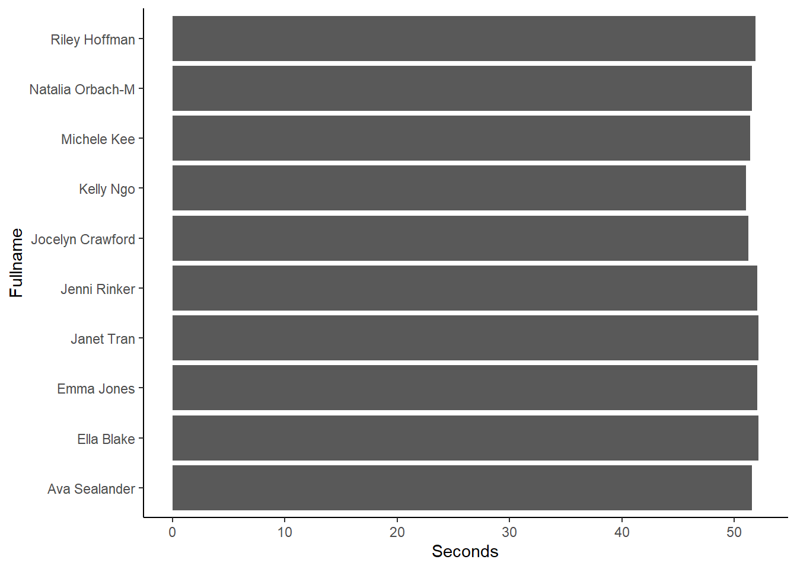
Clearly, there are some things we can clean up on the plot. We don’t need to labels the names axis because that detail is self evident. Even though all bars are compared on an aligned axis, trying to determine who is fastest and who is slowest is very challenging. We really should reorder the bars. For this, we can use forcats::fct_reorder() to reorder the bars and because we only need to arrange them based on a single variable, we do not need to use forcats::fct_reorder2().
For the function we need:
.f: the factor to reorder.x: the variable on which to sort.fun: the function for reordering (median is default, but can be mean, max, etc.)
An option is to also arrange the data using .desc. . desc = TRUE will sort in descending order. Although somewhat counter-intuitive, when the coordinates are flipped, the result will be an arrangement from fastest to slowest speed.
SWIM |>
filter(Event == "100 FREE") |>
filter(Team == "Athena") |>
ggplot(mapping = aes(
x = forcats::fct_reorder(.f = Fullname,
.x = Seconds, # reorder the bars by Time,
.fun = min,
.desc = T
),
y = Seconds
),
) +
geom_col() + # column plot
coord_flip() + # flip the coordinates
theme_classic() 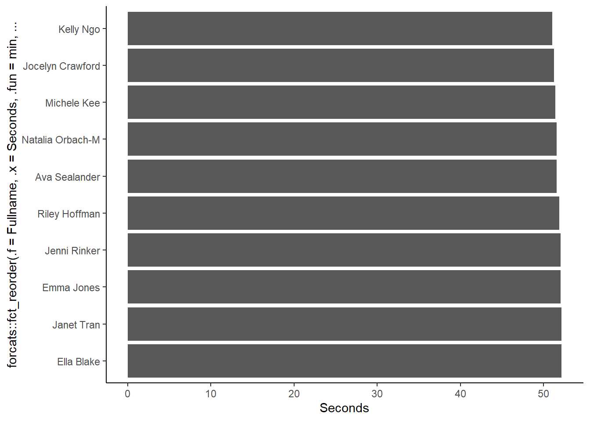
You can see that the reordering of the x aesthetic creates a message label to the axis. Again, we would not need that anyway. The times are very difficult to distinguish also, so even though the bars are ordered in a useful way for identifying the fastest athletes, their exact times are impossible to extract from the plot.
Improving Plot Utility
What might also help with interpreting the data is to visualize who is faster or slower than the average. We can group the data by events and athlete groups, compute a group mean, ungroup, and then create a variable that would hold the color corresponding to one’s performance compared with the group mean. What would be most helpful would be to [do perform this set of operations on the enter SWIM data frame rather than just the subset of interest. Because Event represents both the event and the distance, grouping by that variable will subset also by different distances of the same event type. MeanRelative will serve as a factor for the relative performance, which can be an ordered factor. RelativeFill will serve as the variable containing a color corresponding to one’s performance relative to the group mean.
SWIM <- SWIM |>
group_by(Event, Team) |>
mutate(Mean = mean(Seconds, na.rm = T)) |>
ungroup() |>
mutate(MeanRelative = factor(case_when(
Seconds > Mean ~ "Above",
Seconds == Mean ~ "Mean",
Seconds < Mean ~ "Below"
),
levels = c("Above", "Mean", "Below"),
ordered = TRUE
)) |>
mutate(RelativeFill = factor(case_when(
MeanRelative > "Above" ~ "cornflowerblue",
MeanRelative == "Mean" ~ "grey",
MeanRelative < "Below" ~ "grey60"
),
levels = c("cornflowerblue", "grey", "grey60"),
ordered = TRUE
))Remember to use scale_fill_identity() when colors are saved as a variable in the data frame and when you need to reference them by their character value.
SWIM |>
filter(Event == "100 FREE") |>
filter(Team == "Athena") |>
ggplot(mapping = aes(
x = forcats::fct_reorder(.f = Fullname,
.x = Seconds,
.fun = min,
.desc = T
), # reorder the bars by Time
y = Seconds,
fill = RelativeFill
)
) +
geom_col() + # column plot
coord_flip() + # flip the coordinates
theme_classic() +
scale_fill_identity()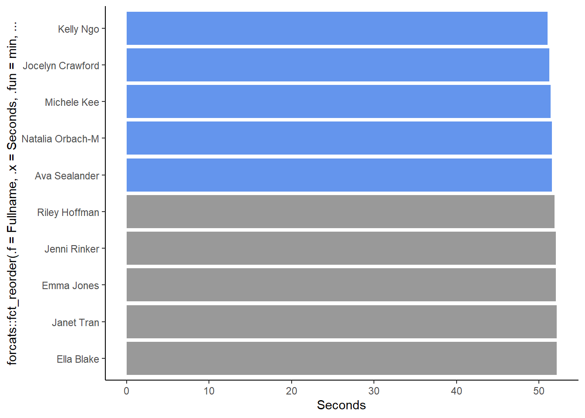
OK, so we can see the two groups of athletes now. Athlete bests, however, occurred in certain years, so we can clarify the data by including the year in which they participated.
We can combine each athlete’s name with their year of fastest time into a variable called Name_Year. One way to accomplish this in Base R is to use paste() to concatenate strings. Because there is a variable containing the last name and first initial, Last_fi, and a variable that contains the Year, we can combine them as a string. paste() has a separator argument, sep which represents the string characters that separate the string objects you are concatenating.
By default, sep = " ", a space.
paste(Last_fi, Year)SWIM |>
filter(Event == "100 FREE") |>
filter(Team == "Athena") |>
mutate(Name_Year = paste(Last_fi, Year)) |>
ggplot(mapping = aes(
x = forcats::fct_reorder(.f = Name_Year,
.x = Seconds,
.fun = min,
.desc = T
), # reorder the bars by Time
y = Seconds,
fill = RelativeFill
)
) +
geom_col() + # column plot
coord_flip() + # flip the coordinates
theme_classic() +
scale_fill_identity()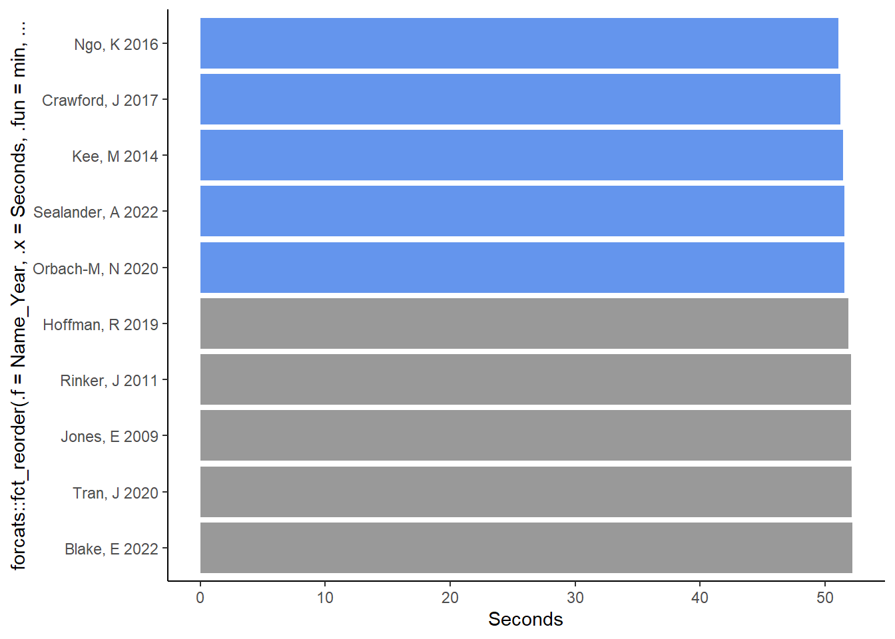
Text Wrapping using paste()
The bars are fairly wide and the names are rather relatively narrow, so we can wrap the text by placing the year under the name. Setting sep = "\n" will separate the variables with a new line.
paste(Last_fi, Year, sep = "\n")Let’s take a look by pull()ing the variable.
SWIM |>
mutate(New_Year = paste(Last_fi, Year, sep = "\n")) |>
pull(New_Year) |>
head()[1] "Crawford, J\n2019" "Sealander, A\n2022" "Ngo, K\n2016"
[4] "Liu, H\n2014" "Kee, M\n2014" "Orbach-M, N\n2020" Although appears in the string, it won’t appear in the displayed object, so everything looks good. Let’s update the data frame.
SWIM <- SWIM |>
mutate(Name_Year = paste(Last_fi, Year, sep = "\n"))Now let’s recreate the plot with the wrapped text variable.
SWIM |>
filter(Event == "100 FREE") |>
filter(Team == "Athena") |>
ggplot(mapping = aes(
x = forcats::fct_reorder(.f = Name_Year,
.x = Seconds,
.fun = min,
.desc = T), # reorder the bars by Time
y = Seconds,
fill = RelativeFill
)
) +
geom_col() + # column plot
coord_flip() + # flip the coordinates
theme_classic() +
scale_fill_identity()We will return to this plot and discuss some ways to modify it but we need to take a brief detour into scatter plots and point labeling.
Labeling points in scatter plots
Another way to visualize the data is with a scatter plot. Let’s say you wanted to plot a scatter plot of years and times. We can add the athlete names to the plot by mapping the variable to a plot aesthetic, for example, the color of the points.
SWIM |>
filter(Event == "100 FREE") |>
filter(Team == "Athena") |>
ggplot(mapping = aes(x = Year,
y = Seconds,
col = Fullname)
) +
geom_point()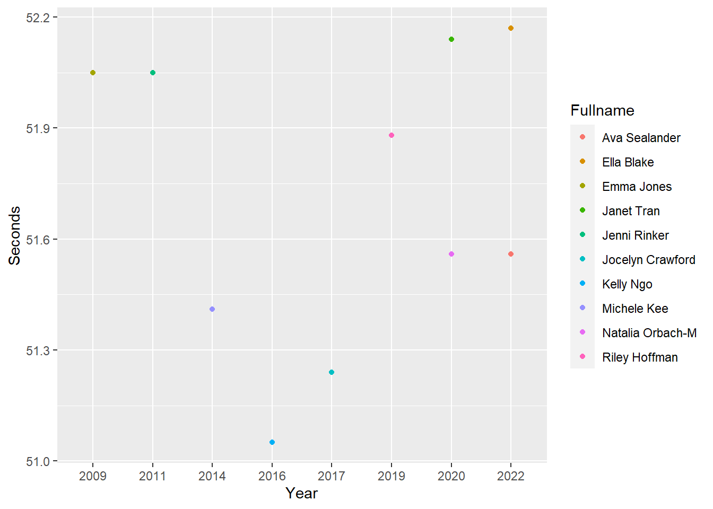
We can now identify the points and their corresponding athletes. Depending on the color palette, however, colors may be recycled which renders such an approach either more complicated or useless. You would need to ensure you color palette includes distinct colors and also perhaps ensure those colors are also appropriate for users with color-vision deficiencies.
In addition to the limitations mentioned above, the utility of the legend is limited. The legend complicates identifying athlete’s performance. In order to locate athlete’s points, the user must switch visual attention between the legend and the points, which is not an efficient allocation of attention to the plot.
Directly Labeling Visualizations
Names can be applied directly to the plot. Labeling points, lines, bars or other geoms or aesthetics is referred to direct labeling. As you will see, direct labeling of geoms can reduce cognitive demands and confusion when perceiving and interpreting data visualizations.
Labeling using geom_point()
One of the {ggplot} solutions to working with text is the text geom, geom_text(). This geom allows you to plot text to plots or place labels inside the plot space.
If the goal is to add text data to the plot to facilitate processing of the plot, geom_text() will be useful. For example, you can map numeric variables like time or year to aesthetics of the plot or you can map character variables like names or categorical labels. You can also set other text if it is not in the data frame.
geom_text() will plot the identity of variable values from the data frame so what you want mapped per row in the data will be whatever value is in that variable row. In order to map the variable, you will need to set label = variable to serve as the label.
With the previous plot, looking at each point does not allow the user to extract the exact performance time corresponding to that point. In some cases, this may not be an issue and the value can be extracted by directing visual attention to the x and y axes.
Direct labeling with the outcome variable, y:
If the goal of the plot is to communicate the performance value and leave no ambiguity about its value or error in extraction from the axes (points farther away will likely be more erroneous), then you can direct label the performance time.
SWIM |>
filter(Event == "100 FREE") |>
filter(Team == "Athena") |>
ggplot(mapping = aes(x = Year, Seconds)) +
geom_text(mapping = aes(label = Seconds))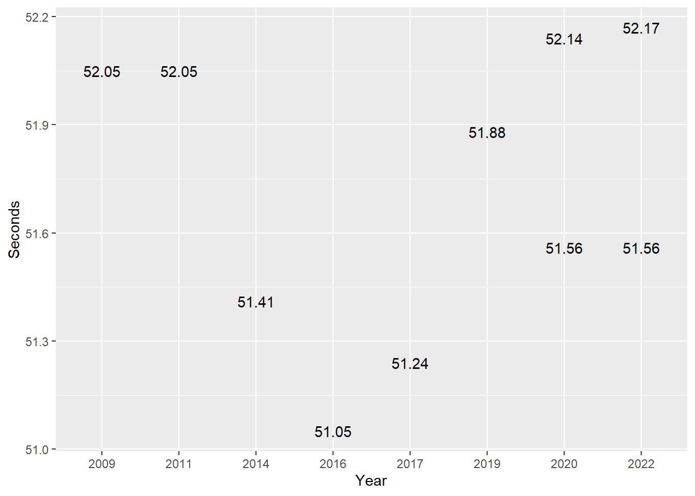
Of course, now the y axis labeling is unnecessary and potentially confusing with the rest of the plot. Removing this is something to address with theme() manipulations, so we won’t address this issue here.
Direct labeling with the variable other than what’s mapped to x or y:
If the goal of the plot is to communicate the athlete for each point, we can map a name variable.
SWIM |>
filter(Event == "100 FREE") |>
filter(Team == "Athena") |>
ggplot(mapping = aes(x = Year, Seconds)) +
geom_text(mapping = aes(label = Fullname))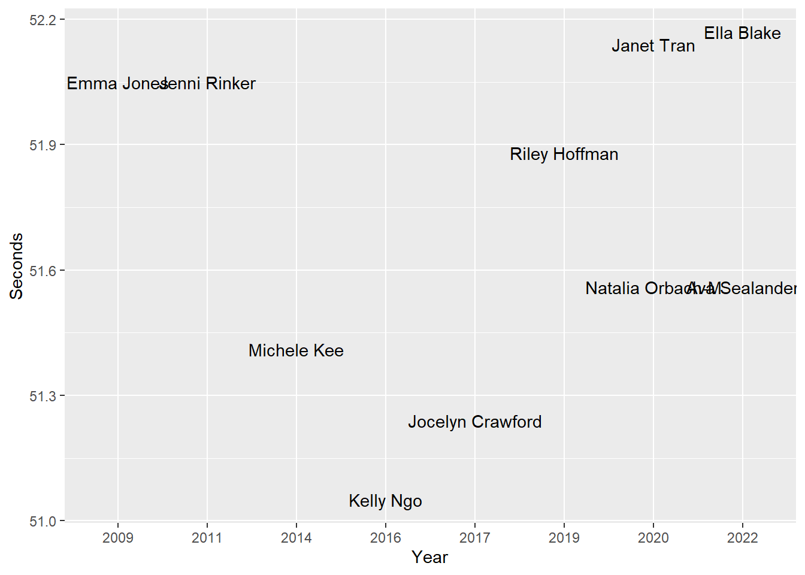
One issue with this plot, and with many, is that the labels can overlap, thus making them illegible. Long labels or having many labels can be your enemy here.
Fixing overlapping labels
Adjusting label font size
You can adjust the font size just as you would with points using the size argument.
SWIM |>
filter(Event == "100 FREE") |>
filter(Team == "Athena") |>
ggplot(mapping = aes(x = Year, Seconds)) +
geom_text(mapping = aes(label = Fullname),
size = 3
)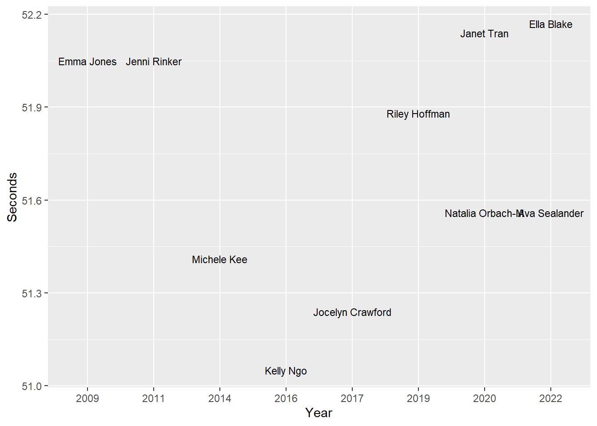
Checking for overlapping labels
Along with adjusting the font size, when labels overlap, we can adjust their positioning. By setting check_overlap = TRUE, the plot will be evaluated for overlapping text. You can set various parameters about this evaluation process, so if desired review the docs. Here, we will see what happens to the plot when using it.
geom_text(check_overlap = TRUE)
SWIM |>
filter(Event == "100 FREE") |>
filter(Team == "Athena") |>
ggplot(mapping = aes(x = Year, Seconds)) +
geom_text(mapping = aes(label = Fullname),
size = 4,
check_overlap = T
)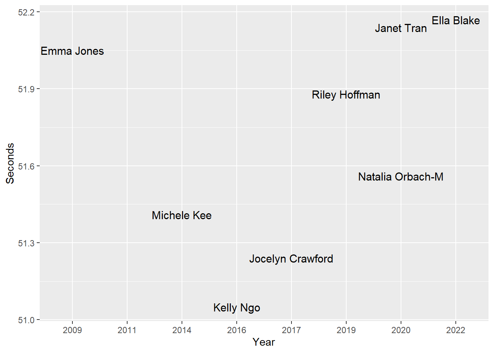
Setting check_overlap = T sometimes results in names disappearing from the plot depending on the degree of overlap with other locations. Consequently, this approach is not a great solution in some cases.
Repelling text objects using ggrepel::geom_text_repel()
Another way to manipulate text and labels on plots involves using {ggrepel}. As the name implies, the library helps repel objects in plots. To repel text labels from each other, we can use geom_text_repel(). We will replace geom_text() with ggrepel::geom_text_repel().
SWIM |>
filter(Event == "100 FREE") |>
filter(Team == "Athena") |>
ggplot(mapping = aes(x = Year, Seconds)) +
ggrepel::geom_text_repel(mapping = aes(label = Fullname),
size = 4
)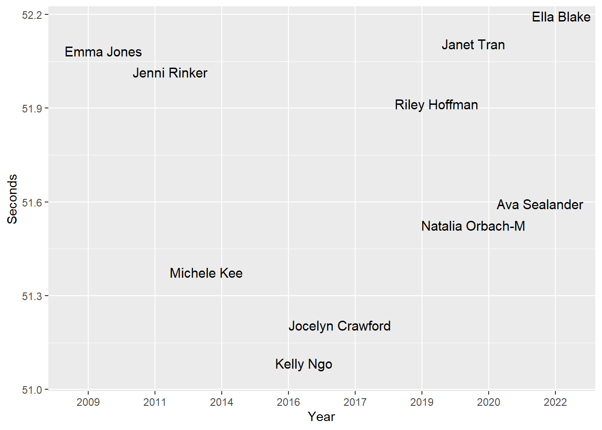
Note: If you want to use geom_text_repel() to display text rather than use geom_text() and you do not want points, use point.size = NA to remove them.
Ensuring labels map onto data positions
Using geom_text_repel(), however, labels are repelled from each other but their positioning, y axis positioning in this instance specifically, results in labels not mapping appropriately onto to the Seconds position.
Adding a geom_point() layer makes this issue quite clear.
SWIM |>
filter(Event == "100 FREE") |>
filter(Team == "Athena") |>
ggplot(mapping = aes(x = Year, Seconds)) +
ggrepel::geom_text_repel(mapping = aes(label = Fullname),
size = 4
) +
geom_point()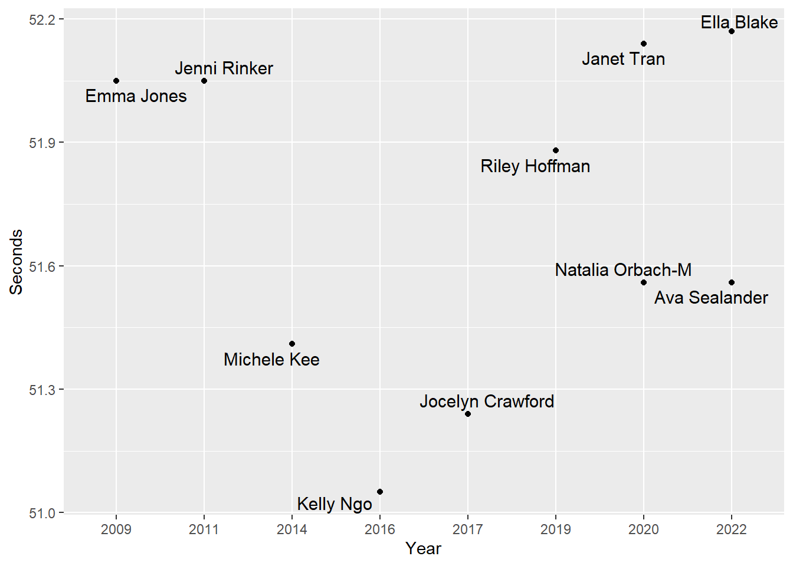
Adding lines to labels repelled from points
Although text or labels are positioned above or below points, there may be some difficulty identifying which point corresponds to a specific label. In order to visually direct the label to the points, you will need to set a value for the box.padding argument. The larger the value, the longer the line. We can set to something like box.padding = .5 or box.padding = 1.
SWIM |>
filter(Event == "100 FREE") |>
filter(Team == "Athena") |>
ggplot(mapping = aes(x = Year, Seconds)) +
ggrepel::geom_text_repel(
mapping = aes(label = Fullname),
size = 4,
box.padding = 1
) +
geom_point()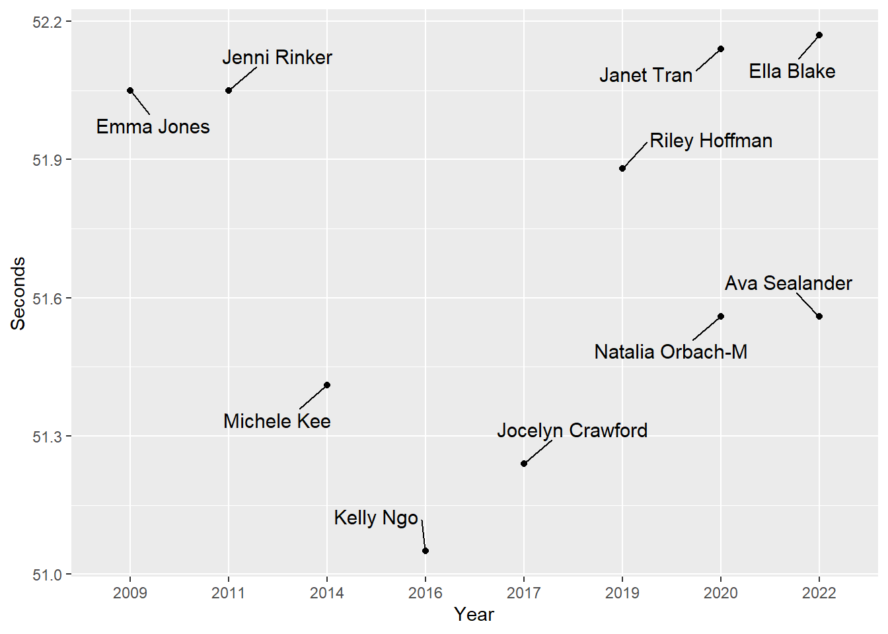
Note: If you wish the line to be an arrow, set the arrow = arrow() and look into grid::arrow() for setting the arrow angle, arrow type, etc. If you don’t want a point, then don’t include the geom_point() layer.
Ensuring labels take the same spatial positions
Everything geom_text_repel() runs, the labels may take new positions. To ensure behavior is not random, set a seed.
SWIM |>
filter(Event == "100 FREE") |>
filter(Team == "Athena") |>
ggplot(mapping = aes(x = Year, Seconds)) +
ggrepel::geom_text_repel(
mapping = aes(label = Fullname),
size = 4,
box.padding = 1,
seed = 167
) +
geom_point()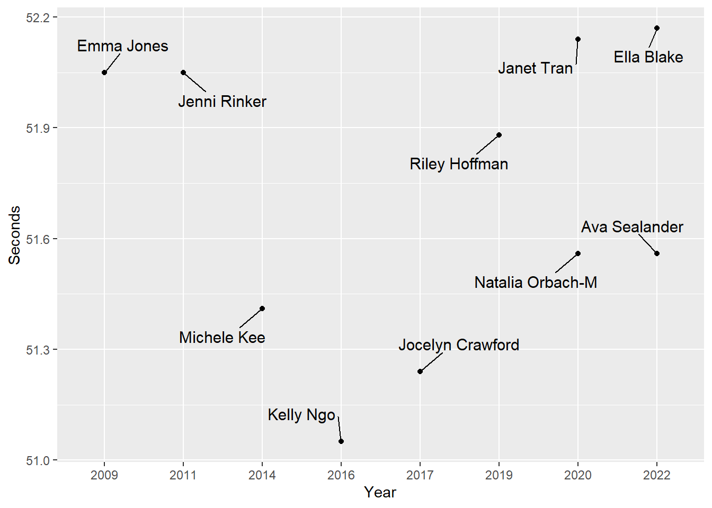
Repositioning Bar Labels using geom_text()
Let’s return to our previous version of the bar plot used to visualize the best swim times each year along with the athlete. We had ordered the bars from fastest to slowest and positioned both the name and the year on the x axis before flipping the coordinates.
We will create a base plot on which to place and adjust geom_text() objects. Dark text on dark-color bars or light text on light-colored bars will make reading difficult. This is an element to change using the full code.
By default, because the names are in the variable mapped to x, they assume the spatial position of the plot corresponding to that axis with each name at tick mark. Labels, however, can be placed wherever you want to place them. Rather than the axis labeling at the base of each bar, we could place at the end of each bar, a location closer to swim time. A location change of this nature would reduce the cognitive demands for processing the plot because the name would be closer to the variable of interest, the swim time. The names could also be positioned inside the bars, thus making the names a property of the bars rather than a property associated with the bars by virtue of their proximity (see Principles of Gestalt Perception).
The text geom, geom_text(), will help with this adding text to bar plots.
Labeling Bars
Using geom_text(), we can modify other text properties not yet discussed. Some arguments and values that we will address include:
fontface = "bold": the font face (e.g., bold, italic, etc.)col = "black": the font colorfamily = "Calibri": the font typev_justandh_just: justification of the horizontal and vertical of strings (“top”, “middle”, “bottom”, “left”, “center”, “right”); or a value between 0 and 1, inclusivenudge_xandnudge_y: nudging horizontal and vertical labels
Repositioning Bar Labels using geom_text()
For this plot, we will set:
col = "black"
fontface = "bold"
size = 3
hjust = 1 # set the horizontal adjustment of the text
vjust = .5 # set the vertical adjustment of the text
nudge_y = -0.25 # nudge along y just a littleChanging label size, color, and font face
col = "black"fontface = "bold"size = 3
SWIM_bar +
geom_text(mapping = aes(label = Name_Year), # map Name_Year to label
col = "black",
size = 3,
fontface = "bold"
)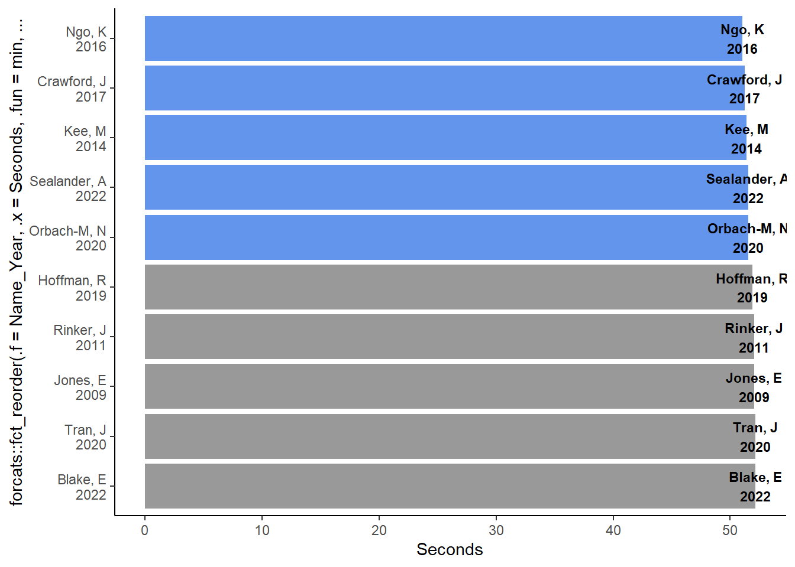
Notice that the spatial positioning of the labels for geom_col() is the same as that for geom_point(), which is the xy coordinate. The y position is where the bar terminates just like where a point terminates in geom_point().
Changing label position
Because the goal would be to place the labels in the bar, this position is not appropriate. We would need to adjust the horizontal or vertical position of the label. Importantly, when you have flipped axes, hjust will not shift the labels left or right but instead up and down. Similarly, vjust will adjust in the other direction.
Thus, setting the horizontal adjustment of the text by setting hjust = 1 or hjust = "top" will set the position to the top of end of each bar for each label. The default vertical justification is vjust = .5 (same as "middle"), which centers the label.
hjust = 1
SWIM_bar +
geom_text(mapping = aes(label = Name_Year),
col = "black",
size = 3,
fontface = "bold",
hjust = 1 # or "top"
)Nudging label position
This position is still not quite right because the rightmost letter of the label terminates at the exact end of the bar. We will need to nudge the label just a little. Making the value negative will adjust the label down on the y axis. Because we have flipped the axes, nudging y negatively will nudge the label to the left.
nudge_y = -0.5
SWIM_bar +
geom_text(mapping = aes(label = Name_Year),
col = "black",
size = 3,
fontface = "bold",
hjust = 1, # or "top"
nudge_y = -0.5
)Adding additional text objects
You can add additional text objects to plots or you can combine text object together as we have with the name and the year.
The bars don’t contain the swim times, so we can direct label them to the bars. In order to do so, we will adjust some of the same parameters as we adjusted earlier.
To visually distinguish the swim times from the other text, we could change properties like font size, face, color, etc.
SWIM_bar +
geom_text(mapping = aes(label = Name_Year),
col = "black",
size = 3,
fontface = "bold",
hjust = 1, # or "top"
nudge_y = -0.5
) +
geom_text(mapping = aes(label = Seconds), # map Seconds to label
col = "grey40",
# family = "Times New Roman",
fontface = "italic",
# vjust = 0, # set the vertical adjustment
hjust = 0,
nudge_x = 0.0, # no nudge
nudge_y = 0.05, # nudge up on y (right on x)
size = 3 # set the vertical adjustment
)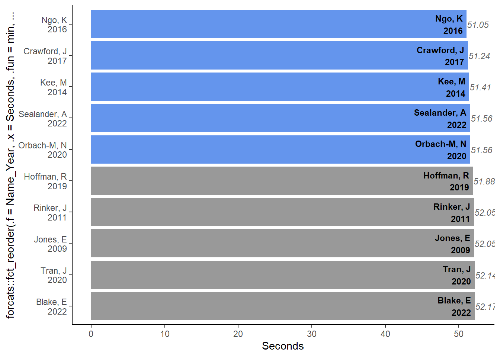
Removing scale breaks
Because we don’t need the athlete’s names on the axes, we can remove them. They are discrete labels so we can use scale_<axis>_<type>().
scale_x_discrete(breaks = NULL)# remove the break labels (athlete names)scale_y_continuous(breaks = seq(50, 52.25, .25))# add more breaks
Removing axis lines and legend
We don’t the line for that axis either, which we can remove. Removing this will involve manipulating theme() objects.
Setting axis.line.<axis> = element_blank()) will remove the line for that axis and legend.position = "none") will remove the legend.
theme(axis.line.y = element_blank())theme(legend.position = "none")
Setting the y axis limits
In order to zoom into the plot, we can modify the limits. To change the limits for the y axis, we can set ylim as part of coord_flip(). You will want to address coordinate elements in a single coord_*() function, so set this here.
coord_flip(ylim = c(50, 52.25))
Assembling the plot layers
Putting the pieces all together.
We can put all the plot layers together and add a title.
# make an object
(final_bar_plot <- SWIM |>
filter(Event == "100 FREE") |>
filter(Team == "Athena") |>
ggplot(mapping = aes(
x = forcats::fct_reorder(.f = Name_Year,
.x = Seconds,
.fun = min,
.desc = T), # reorder the bars by Time
y = Seconds,
fill = RelativeFill
)
) +
geom_col() + # column plot
coord_flip(ylim = c(50, 52.25)) + # flip the coordinates
scale_fill_identity() +
scale_y_continuous(breaks = seq(50, 52.25, .25)) +
theme_classic() +
geom_text(mapping = aes(label = Name_Year),
col = "black",
size = 3,
fontface = "bold",
hjust = 1,
nudge_y = -0.05
) +
geom_text(mapping = aes(label = Seconds), # map Name to label
col = "grey20",
fontface = "italic",
# vjust = 0, # set the vertical adjustment
hjust = 0,
nudge_x = 0.0, # no nudge
nudge_y = 0.02, # nudge up on y (right on x)
size = 3.5 # set the vertical adjustment
) +
labs(title = "The Fastest Athenas in the 100 Freestyle", # title
subtitle = "Event Year and Best Time", # subtitle
y = NULL, # remove x label and assoc. whitespace
x = NULL
) +
scale_x_discrete(breaks = NULL) + # remove the break labels (athlete names)
theme(legend.position = "none",
axis.line.y = element_blank() # remove the line on x
)
)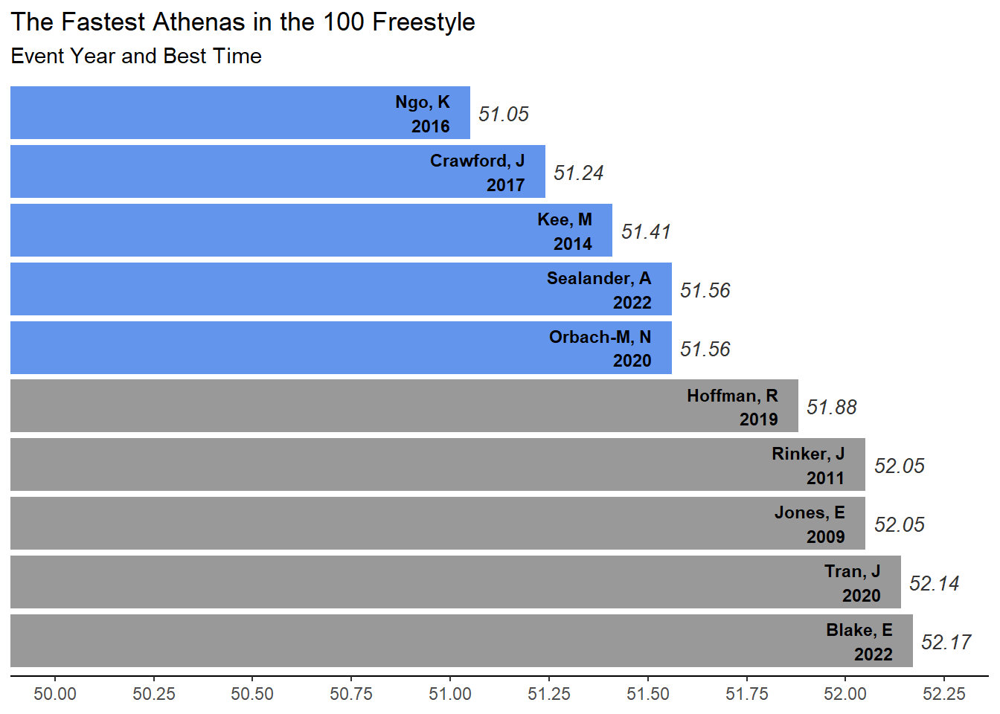
Annotation
{ggplot2} has another function for adding text. There is a benefit to annotate() over other text functions. Whereas geom_text() will map text from variables in the data, annotate() will accept text from vectors that are not in the data frame so you are not limited to variables in the data frame. This function will be useful when you want to add specific labeling to a plot. Like geom_text(), the annotate() layer will
col: text colorx: the x coordinate positiony: the y coordinate positionsize: font sizelabel: the label to annotatefontface: the font face
Create an object called median_seconds containing the median time for the best times.
median_seconds <- SWIM |>
filter(Event == "100 FREE") |>
filter(Team == "Athena") |>
summarize(median = median(Seconds)) |> pull()Annotating a bar plot
Create a plot with a geom_segment() layer:
We will use geom_segment() to add a line segment from a starting xy coordinate position to an ending xy coordinate position.
final_bar_plot +
geom_segment(aes(x = 0, # the starting x position
y = median_seconds, # the starting y position
xend = 10.5, # the ending x position
yend = median_seconds # the ending y position
),
color = "black",
#size = 1,
linetype = "dashed",
linewidth = .75
) +
annotate("text",
col = "black",
x = 9, # higher than the 10th bar
y = median_seconds + .05,
size = 3.5,
label = paste("median = ", median_seconds, sep = " "),
angle = 270,
fontface = "italic"
)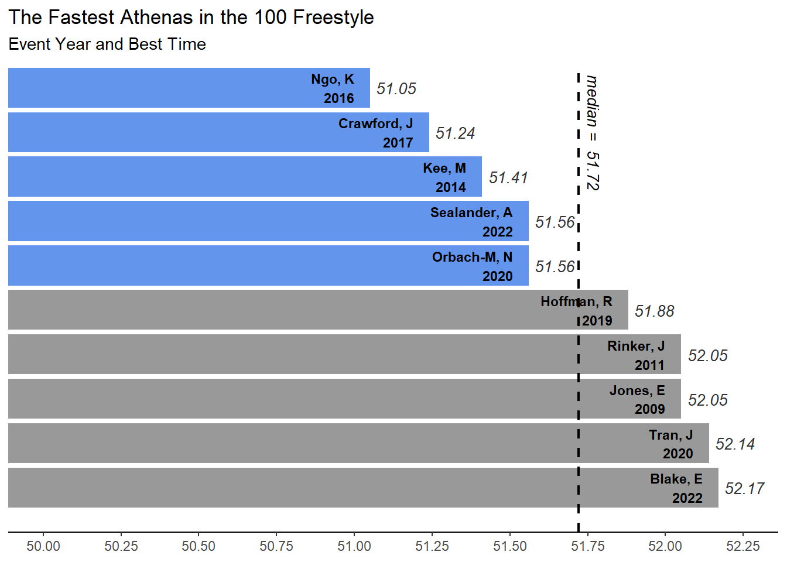
Create a plot with a geom_hline() layer:
We will now use geom_hline() to add a line segment which will be placed according to a yintercept specification.
final_bar_plot +
geom_hline(yintercept = median_seconds,
col = "grey40",
linetype = "dashed",
linewidth = .1
) +
annotate("text",
col = "cornflowerblue",
x = 9, # higher than the 10th bar
y = median_seconds + .05,
size = 3.5,
label = paste("median = ", median_seconds, sep = " "),
angle = 270,
fontface = "italic"
)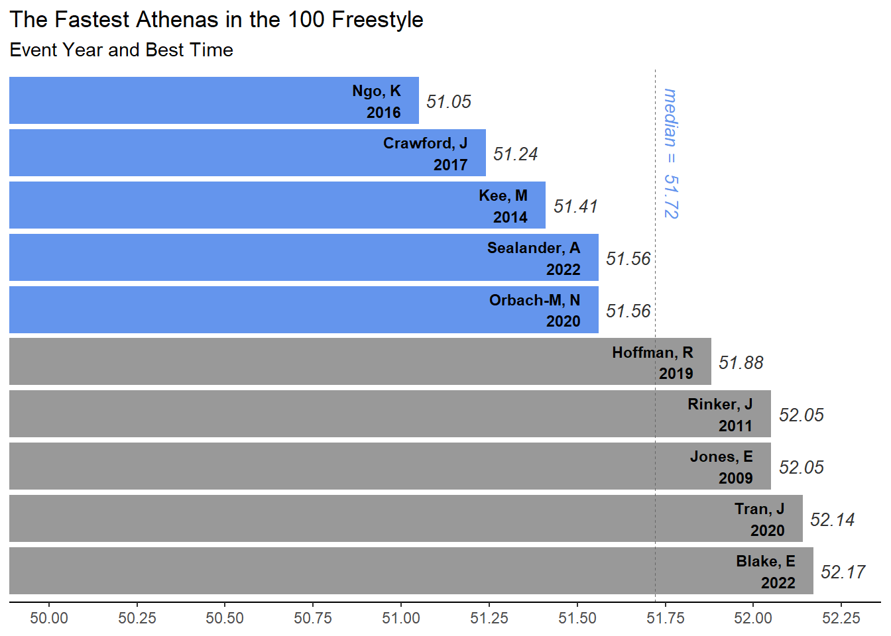
Adding font color to text
There are different ways to add code or other HTML formatting to plot objects. You can certainly edit the code and render as HTML is the theme() layer. The {ggtext} library offers some addition text detailing capability especially in cases where you want to place text is nontraditional locations. There are other ways too and will likely be more but these two options will take you some good distance.
Adding font color using HTML code in labs() and rendering with theme()
You can decorate your text with color by passing HTML code to the labs() function. However, unlike geom_richtext(), the text containing HTML code will render as pure text unless you have the element rendered for markdown using element_markdown() with in the theme().
If your code appears as the pure HTML code, then you have likely overlooked this last part of the process.
For example, if you want to add a plot title and subtitle containing HTML code, you will pass the text to the labs(title = "text", subtitle = "text") function and then add (or edit) a theme() layer and make sure to have the plot.title and plot.subtitle rendered as element_markdown().
Changing font face in theme() elements
Within the element_markdown() rendering, we can also set the font to bold or italics by specifying face.
Step 1: Write your text Step 2: Edit your text to contain HTML breaks, colors, etc. Step 3: Pass your text to a function handling text objects (e.g., labs()) Step 4: Ensure your theme()contains the text object and the text object element is passed to the helper function element_markdown()
Example code:
# title layer with
labs(title = "Just a Title",
subtitle = "Title part in default color and <span style = 'color:red'>part in color <br> a break and a break <br>/span> and more text"
) +
# theme layer with font face manipulation
theme(
plot.title = element_markdown(face = "bold"),
plot.subtitle = element_markdown(face = "italic")
)Rather than add the text in the labs() function directly, we will create separate string objects to pass into labs(). The title will be standard text without any HTML markup and the subtitle will contain HTML elements, external objects, and character strings.
title_message <- "Fastest Athenas in the 100 m Freestyle from 2009 to 2022"Start the title as plain text, then add some HTML for color, within which to add more text, then end the HTML chuck, then add external object followed by some more plain text.
subtitle_message <- paste0("Five were <span style = 'color:cornflowerblue'>",
"faster than the top 10 median time ", "</span>",
"(", median_seconds, " seconds)"
)Apply components to the plot:
final_bar_plot +
labs(title = title_message,
subtitle = subtitle_message
) +
theme(
plot.title = element_markdown(face = "bold"),
plot.subtitle = element_markdown(face = "italic")
)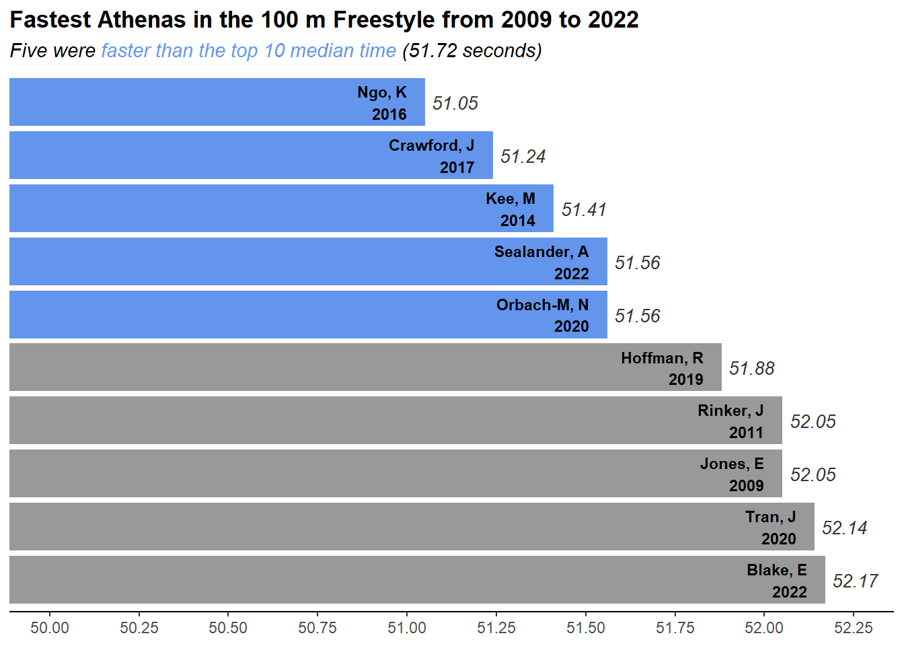
Adding font color using HTML code using ggtext::richtext()
One function from {ggtext} that is particularly useful is geom_richtext(), which will allow for passing html code styling to text labels. However, working with text as titles may be more difficult because you need to specificity the xy positions for the text objects to be placed. When you edit the text inside layers like labs(), those coordinates are already specified and don’t require you set them. An example is offered here, which creates two text objects using ggtext::geom_richtext(). As a word of warning, working with objects this way will require some readjustment of coordinates in order to make room for text positioned above the plot.
geom_richtext()works like geoms from {ggplot2} by mapping aesthetic properties
plot_message <- paste0("Faster than the<br>median (", median_seconds, " s)<br>of the top 10")
final_bar_plot +
# fixing coordinates to make space for title
coord_flip(xlim = c(1, 11),
ylim = c(50, 52.25)
) +
labs(title = "",
subtitle = ""
) +
# now add the text annotation
ggtext::geom_richtext(
x = 11.3,
y = 51,
size = 5,
label = "Fastest Athenas in the 100 m Freestyle (2009 - 2022)",
fontface = "bold",
fill = NA, # remove background
label.color = NA # remove outline
) +
ggtext::geom_richtext(
x = 9,
y = 52,
size = 4,
label = paste0("<span style = 'color:cornflowerblue'>",
plot_message, "</span>"
),
fontface = "bold",
fill = NA, # remove background
label.color = NA # remove outline
)Coordinate system already present. Adding new coordinate system, which will
replace the existing one.
Personalizing your plot
As the author of the plot, you want others to be able to credit you as the author, to site you as the author, or find you somehow. One way to add some authorship to your plot is to simply add a caption as part of your plot labs().
final_bar_plot +
labs(caption = "Plot: github.com/slicesofdata") # simple standard approach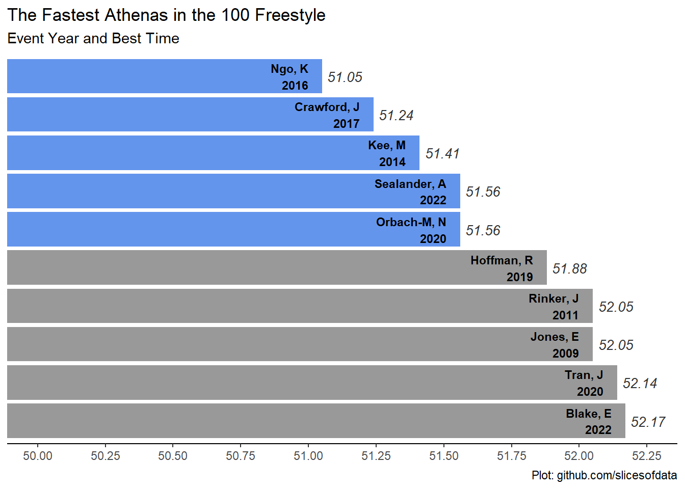
A more advanced approach would be to use {ggplot2} element_text() to decorate the text.
final_bar_plot +
labs(caption = "Plot: github.com/slicesofdata") +
# a more detailed approach
theme(plot.caption = element_text(size = 12,
color = "cornflowerblue",
face = "bold",
hjust = 0 # left justified
)
)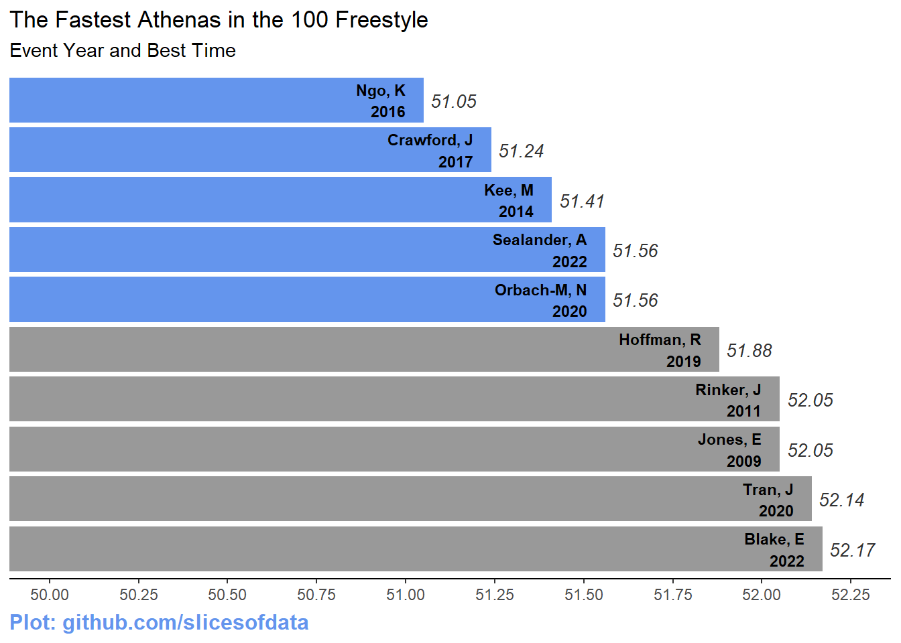
Summary
Adding annotation to data visualizations can be useful for a variety of reasons. Adding text to facilitate plot perception is very relevant to the goal of communicating your plot effectively. Adding the source of data is useful for others to replicate your work and adding your name or contact information allows others to credit you for your work.
Session Info
R version 4.3.1 (2023-06-16 ucrt)
Platform: x86_64-w64-mingw32/x64 (64-bit)
Running under: Windows 11 x64 (build 22621)
Matrix products: default
locale:
[1] LC_COLLATE=English_United States.utf8
[2] LC_CTYPE=English_United States.utf8
[3] LC_MONETARY=English_United States.utf8
[4] LC_NUMERIC=C
[5] LC_TIME=English_United States.utf8
time zone: America/Los_Angeles
tzcode source: internal
attached base packages:
[1] stats graphics grDevices utils datasets methods base
other attached packages:
[1] showtext_0.9-6 showtextdb_3.0 sysfonts_0.8.8 ggrepel_0.9.3 ggtext_0.1.2
[6] ggplot2_3.4.3 forcats_1.0.0 magrittr_2.0.3 dplyr_1.1.2
loaded via a namespace (and not attached):
[1] gtable_0.3.4 jsonlite_1.8.7 compiler_4.3.1 tidyselect_1.2.0
[5] Rcpp_1.0.11 stringr_1.5.0 xml2_1.3.5 scales_1.2.1
[9] yaml_2.3.7 fastmap_1.1.1 here_1.0.1 R6_2.5.1
[13] commonmark_1.9.0 labeling_0.4.2 generics_0.1.3 knitr_1.43
[17] htmlwidgets_1.6.2 tibble_3.2.1 munsell_0.5.0 rprojroot_2.0.3
[21] pillar_1.9.0 rlang_1.1.1 utf8_1.2.3 stringi_1.7.12
[25] xfun_0.40 cli_3.6.1 withr_2.5.0 digest_0.6.33
[29] grid_4.3.1 gridtext_0.1.5 rstudioapi_0.15.0 markdown_1.8
[33] lifecycle_1.0.3 vctrs_0.6.3 evaluate_0.21 glue_1.6.2
[37] farver_2.1.1 fansi_1.0.4 colorspace_2.1-0 rmarkdown_2.24
[41] tools_4.3.1 pkgconfig_2.0.3 htmltools_0.5.6